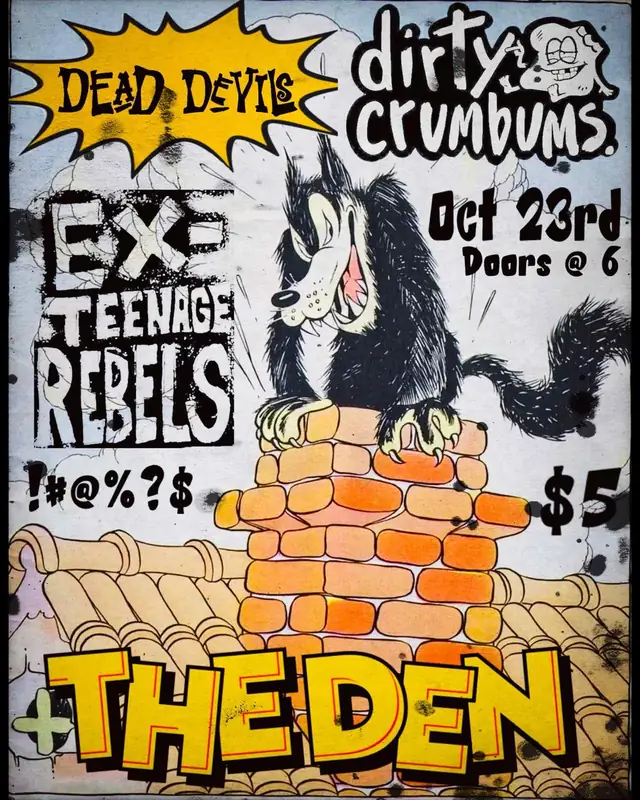

up next · Oct 23, 2026 · the denshows
- up next
- 23Oct 2026Dirty Crumbums, Dead Devils, Ex-Teenage Rebelsthe den
- 2026
- 12Aug 2026Mongo, STMBLR, Ex-Teenage Rebelsthe den
- 27Jun 2026Ex-Teenage Rebelsbetty’s


act pages are built automatically from the show archive, so something may be off: a misspelled name, a missing link, the wrong type, or a bad local/touring call. no disrespect meant. wrong on any of that, or want a listen link (youtube or bandcamp) or live footage added? send it in.